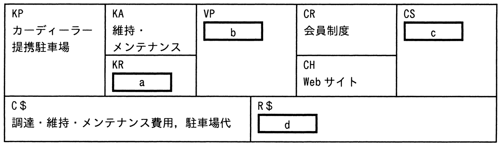

カーシェアビジネスをビジネスモデルキャンバスに当てはめた。bに該当するものはどれか。なお，ア〜エはa〜dのいずれかに該当する。
〔カーシェアビジネス〕
・カーディーラーから車両を調達し，維持・メンテナンスしながら，その車両を提携駐車場に保管・準備する。
・必要なときだけ車両を使いたい人が登録する会員制度を構築し，会員から月会費を徴収する。
・会員向けのWebサイトで，会員に使いたい車両や利用時間などを予約してもらい，会員に対して車両の時間貸しを行い，利用料を徴収する。
〔ビジネスモデルキャンバス〕

ア 月会費，利用料
イ 車両
ウ 車両の時間貸し
エ 必要なときだけ車両を使いたい人